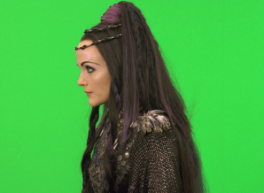
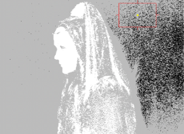
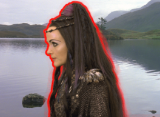
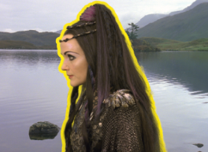

The View parameter allows Keylight to render the final composite of the foreground over the background, or the foreground RGBA for compositing further down the tree. Two options, Screen Matte and Status, are for viewing the key rather than an output. The options are:
• Source - shows the blue/green screen foreground.
• Source Alpha - shows the alpha channel on the foreground input.
• Screen Matte - this is the matte created from picking the Screen Color. It does not include any inside or outside masks.
• Inside Mask - shows the inside input. This is used to firm up the foreground matte to stop print through.
• Outside Mask - shows the outside input. The outside mask is used as a garbage mask to reveal the background.
• Combined Matte - the screen matte, inside mask, and outside masks added together.
• Status - this renders an exaggerated view of the key so that minor problems are shown clearly.
• Intermediate Result - use this option on shots that can only be keyed using several different keys on different parts of the image (multi-pass keying). This renders the original source image with the Screen Matte generated in this Keylight node. In Keylight nodes down the tree, you should set the Source Alpha in the Inside Mask folder to Add To Inside Mask.
• Final Result - this creates a premultiplied RGBA foreground that can be composited later. There’s an Unpremultiply Result toggle you can use if you wish.
• Composite - this renders the foreground composited over the background using all mattes, spill and color corrections.
Status is one of the options in the View dropdown menu and shows an exaggerated view of the key so that you can make a more informed decision when fine tuning the composite. The figure on the right shows the Status after the screen color has been picked from the image shown in the figure on the left.
|
 |
 |
| Green screen. | Status. |
Three colors are displayed:
• Black pixels represent pure background in the final composite.
• White pixels are pure foreground.
• Gray pixels are a blend of the foreground and background pixels. The gray is just one color to highlight any areas that are not pure foreground or background. Gray pixels do not mean the key is poor - the final composite may be fine.
You may occasionally see other colors in the Status view. The figure on the left shows black, white, gray, and green pixels.
|
|
 |
| Status showing processing of the alpha channel. |
Composite showing Screen Replace Color. |
• Green pixels are a warning. They show you the parts of the alpha that have changed through processing the alpha channel (clipped, softened, or eroded). These areas have had the correct amount of spill removed, but the alpha has subsequently changed and the composite may no longer look right. This can be corrected using the Screen Replace Color to put back color in these areas. Above, the figure on the right is an extreme example to illustrate the point. The Screen Replace Color has been set to pure red and you can see that this mirrors the green pixels in the Status view.
Similarly, you may see blue pixels in the Status.
|
|
 |
| Status showing how the inside matte affects the foreground. |
Composite showing |
• Blue pixels represent processed pixels in the Inside Mask that affect the despill of the foreground. The Inside Replace Color is used to modify these pixels. Another extreme example is shown above in the figure on the right. The Inside Replace Color is set to pure yellow and the Inside Replace is Hard Color.
• You may also see dark red pixels in the Status. Red pixels indicate areas where an outside mask has been used to reduce the transparency of the image.
|
|